สไลด์ต้นฉบับของตอนนี้ (หน้า 2–12)
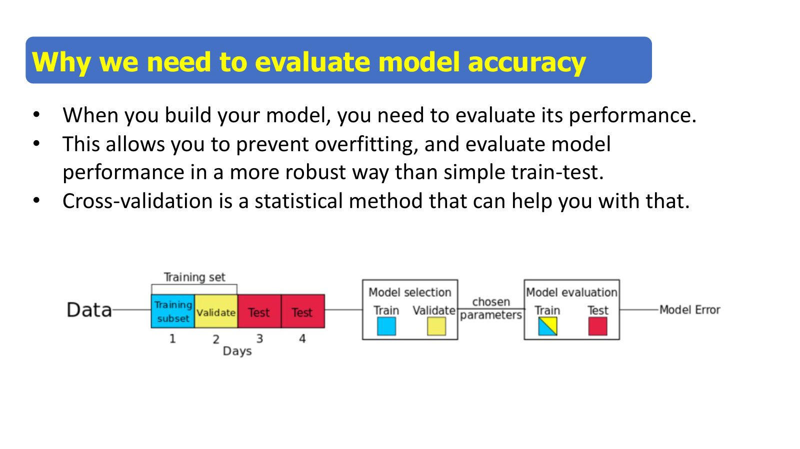
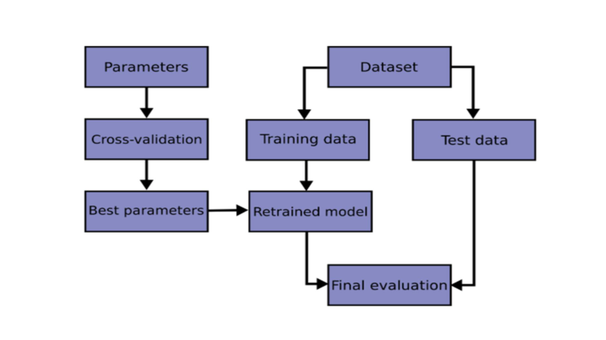

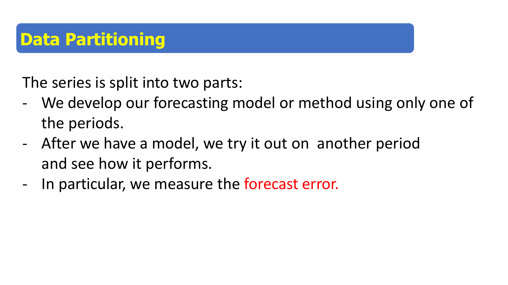


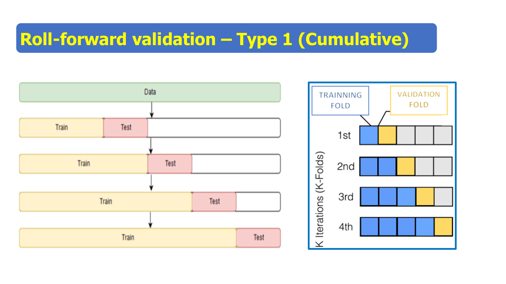

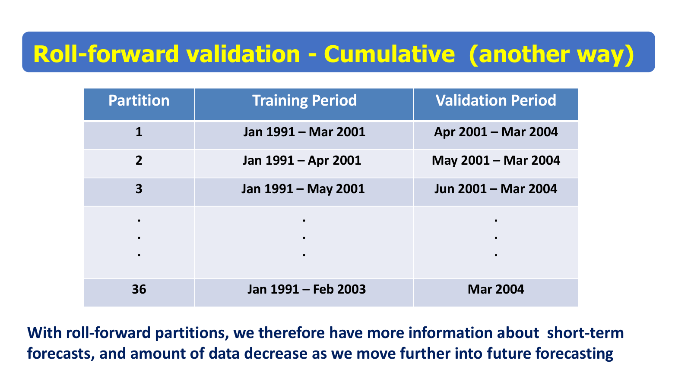

Slide 2 — Performance Evaluation และ Stationary Time Series
ก่อนสร้างโมเดลใดก็ตาม มีคำถามสองข้อที่ต้องตอบให้ได้ ข้อแรกคือเราจะรู้ได้อย่างไรว่าโมเดลพยากรณ์ดี ต้องแบ่งข้อมูลอย่างไร และใช้ตัวเลขอะไรวัด ข้อที่สองคืออนุกรมแบบไหนที่สร้างโมเดลได้ง่าย คำตอบของข้อหลังคืออนุกรมที่ stationary หรือ "นิ่ง" ซึ่งเป็นเรื่องหลักของทั้งวิชา1 และตรวจได้ด้วยการหา mean function กับ autocovariance ที่ฝึกมาใน Lesson 1 ซึ่งเป็นโจทย์แบบที่ออกสอบมากที่สุด ครึ่งหลังของบทจึงเต็มไปด้วยโจทย์จริงที่อาจารย์ใช้ในห้อง รวมถึงข้อสอบเก่า และ Exercise 1 ที่แจกในวิชา
วิธีตรงที่สุดในการรู้ว่าโมเดลพยากรณ์ยอดขายใช้ได้หรือไม่ คือรอให้เดือนหน้ามาถึงแล้วเทียบ สมัยก่อนต้องทำแบบนั้นจริง ๆ แต่ปัจจุบันข้อมูลมีมากพอ เราจึงตัดข้อมูลส่วนหนึ่งออกมาแกล้งทำเป็นอนาคต แล้ววัดว่าโมเดลทายส่วนนั้นได้ใกล้แค่ไหน2 เหตุผลที่ต้องวัดบนข้อมูลที่โมเดลไม่เคยเห็นคือปัญหา overfitting โมเดลที่ overfit จำทั้งส่วนที่เป็นระบบ (systematic) อย่าง trend และ seasonal กับส่วนที่เป็น noise แต่ noise ไม่ซ้ำในอนาคต โมเดลแบบนี้จึงทำงานแย่กับข้อมูลใหม่ เหมือนนักเรียนที่ท่องเฉลยข้อสอบเก่าได้ทุกข้อ สอบชุดเดิมได้เต็ม แต่ทำชุดใหม่ไม่ได้ error บนข้อมูลที่ใช้ฝึกจึงบอกแค่ว่าโมเดลจำเก่ง ไม่ได้บอกว่าพยากรณ์เก่ง
แบบแผนมาตรฐานแบ่งข้อมูลเป็นสามส่วน ส่วนแรก (train) ใช้ฝึก ส่วนที่สอง (validate) ใช้เลือกพารามิเตอร์ และส่วนสุดท้าย (test) ใช้วัดผลครั้งเดียว ลำดับงานคือแยก train กับ test ตั้งแต่ต้น ใช้ cross-validation บน train หาพารามิเตอร์ที่ดีที่สุด ฝึกโมเดลใหม่บน train ทั้งหมด แล้วจึงประเมินบน test ถ้าเอา test มาช่วยเลือกพารามิเตอร์ ผลที่วัดได้จะดีเกินจริง เพราะโมเดลถูกปรับให้เข้ากับข้อมูลชุดนั้นไปแล้ว วิชานี้ทำให้ง่ายลงโดยไม่ใช้ validation set มีแค่ training set ไว้สร้างโมเดลและ test set ไว้ทดสอบ ส่วน validation set อาจต้องใช้ในงาน deep learning3 กติกาสำคัญคือทำเหมือนไม่รู้ test set เลย4 และโมเดลที่จะได้มาเทียบกันในช่วงแรกของวิชาคือ smoothing กับ decomposition5 สิ่งที่วัดคือ forecast error เพราะความแม่นยำไม่มีมาตรวัดโดยตรง6
ข้อมูล cross-sectional แบ่งส่วนเหล่านี้โดย is usually done randomly คือสุ่มเลือกแถว ซึ่งทำได้เพราะแถวเป็นอิสระต่อกัน7 train ซึ่งใหญ่ที่สุดใช้สร้างโมเดล validation ใช้เทียบโมเดลเพื่อ pick the best one. และ test ใช้ประเมินโมเดลที่เลือกแล้ว with new data แต่อนุกรมเวลาห้ามสุ่มเด็ดขาด เพราะข้อมูลมีลำดับ8 ถ้าสุ่ม ปี 2003 อาจไปอยู่ใน train ขณะที่ปี 2001 อยู่ใน test ซึ่งเท่ากับใช้อนาคตทายอดีต งานจริงไม่มีข้อมูลอนาคตให้ใช้ การแบ่งจึงต้องเลียนแบบสถานการณ์จริง คือช่วงต้นเป็น train และช่วงท้ายเป็น test
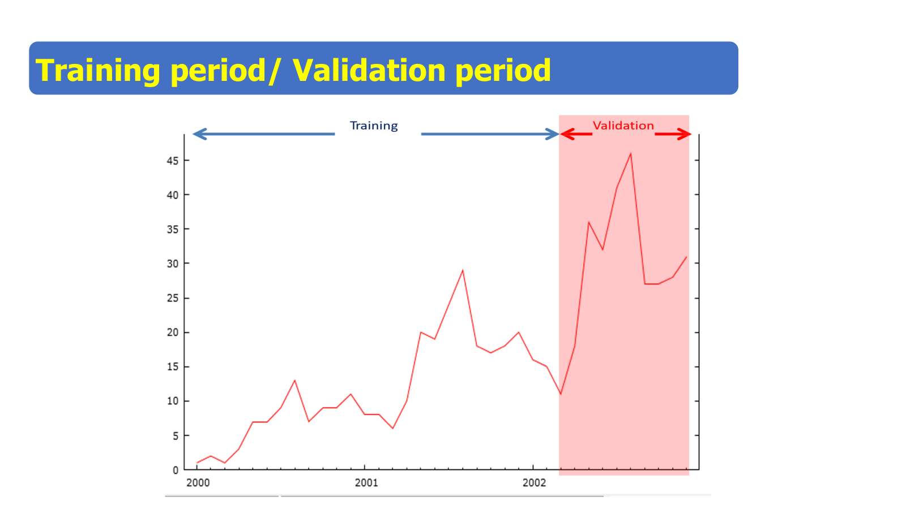
วิธีที่ง่ายที่สุดคือ fixed partitioning ซึ่งตัดครั้งเดียว เช่น 80% แรกเป็น train และ 20% ท้ายเป็น test แล้วเทียบเส้นพยากรณ์กับค่าจริงในช่วง test9 ในกราฟนี้ช่วง 2000 ถึงต้นปี 2002 เป็น train ค่าขึ้นจาก 1 ไปราว 29 แล้วลงเหลือ 11 ส่วนช่วงท้ายปี 2002 เป็น test ค่ากระโดดเป็น 36 และ 46 โมเดลไม่เคยเห็นค่าเกิน 29 มาก่อน นี่จึงเป็นการทดสอบที่ยาก ข้อเสียของวิธีนี้คือได้ error เพียงค่าเดียว ถ้าช่วง test บังเอิญผิดปกติ ผลที่วัดได้ก็ผิดปกติตาม
Roll-forward แก้ข้อเสียนี้ด้วยการแบ่งหลายรอบ และเป็นแบบที่งาน IS กับ thesis ใช้10 แบบสะสม (cumulative) เริ่มจากรอบแรกที่ train คือช่วง 1 และ test คือช่วง 2 รอบที่สอง train คือช่วง 1–2 และ test คือช่วง 3 ไปเรื่อย ๆ train ยาวขึ้นทุกรอบเพราะเก็บข้อมูลเก่าไว้หมด ส่วน test มีขนาดเท่าเดิมและอยู่ถัดจาก train เสมอ เราจึงได้ error หลายค่ามาเฉลี่ย ส่วนแบบหน้าต่างเลื่อน (moving window) ให้ train และ test มีขนาดคงที่ แต่เลื่อนไปทางขวาทุกรอบและทิ้งข้อมูลเก่าที่หลุดหน้าต่าง ในข้อมูล 1,000 จุด รอบแรก train ราวจุดที่ 0–150 และ test ราว 150–210 จนรอบสุดท้าย train อยู่ราว 800–960 แบบนี้เหมาะเมื่ออดีตไกล ๆ ไม่เกี่ยวกับปัจจุบันแล้ว เช่น ตลาดที่โครงสร้างเปลี่ยนหลังเหตุการณ์ใหญ่11 สไลด์ยังแสดงแบบสะสมอีกวิธีหนึ่ง โดย train เริ่มที่ Jan 1991 ทุกรอบและจบที่ Mar 2001, Apr 2001, … จนถึง Feb 2003 รวม 36 รอบ ส่วน test คือทุกเดือนที่เหลือจนถึง Mar 2004 รอบแรกจึงมี test 36 เดือน รอบที่สองมี 35 เดือน และรอบสุดท้ายมีเดือนเดียว การทำแบบนี้เขียนด้วย for loop และให้เห็นตั้งแต่การพยากรณ์ระยะยาวถึงระยะสั้น12 ผลคือการพยากรณ์ล่วงหน้า 1 เดือนมีให้วัด 36 ครั้ง แต่ล่วงหน้า 36 เดือนมีให้วัดครั้งเดียว ตรงกับข้อความบนสไลด์ With roll-forward partitions, we therefore have more information about short-term forecasts, and amount of data decrease as we move further into future forecasting
ในทางปฏิบัติ ข้อมูลอุณหภูมิโลก temp.txt มี 142 ปี (1856–1997) ถ้ากัน 36 ปีท้ายไว้เป็น test จะเหลือ train 106 ปี (1856–1961) และ test คือปี 1962–199713 คำสั่งที่ขาดไม่ได้คือ ts() ถ้าไม่ใส่ R จะถือว่าเป็นข้อมูล cross-sectional14
temperature <- read.table("temp.txt")
new_temperature <- ts(temperature, start = 1856)
nValid <- 36
nTrain <- length(new_temperature) - nValid
train.ts <- window(new_temperature, start = 1856, end = 1856 + nTrain - 1)
test.ts <- window(new_temperature, start = 1856 + nTrain, end = 1856 + nTrain + nValid - 1)read.table ได้ 142 แถว ts(..., start = 1856) ทำให้แกนเวลาเป็นปี 1856–1997 แทน 1, 2, 3 ค่า nTrain คือ 142 − 36 = 106 และ window() ตัดช่วงตามเวลาจึงรักษาลำดับไว้ ไฟล์ R ของวิชามีสามแบบที่ให้ผลเดียวกัน คือใช้ ts(temperature) โดยไม่ใส่ปีแล้วตัดด้วย start = 1, end = nTrain ใส่ปีแล้วใช้รูป c(1856, nTrain) หรือใช้ปีตรง ๆ ดังโค้ดข้างบน ข้อควรระวังคือถ้าใส่ start = 1856 ใน ts() แล้วไปตัดด้วย start = 1, end = 106 R จะเตือน 'start' value not changed แล้วหยุดด้วย error 'start' cannot be after 'end' เพราะเวลา 1 ถึง 106 อยู่ก่อนปี 1856 ทั้งหมด





ให้ \(Y_t\) เป็นค่าจริงและ \(F_t\) เป็นค่าพยากรณ์ error ของแต่ละจุดคือ \(e_t=Y_t-F_t\) ค่าจริงลบค่าพยากรณ์ ก่อนเข้าสูตรมีหลักสองข้อ ข้อแรก error ต้องคำนวณบน test set เท่านั้น เพราะ error บน training set ไม่มีประโยชน์ด้วยเหตุผลเรื่อง overfitting15 ข้อนี้ใช้กับควิซด้วย ถ้าควิซให้คำนวณ RMSE หรือ MAE ให้ใช้เฉพาะ test set16 ซึ่งเป็นแบบ open book ใช้คอมพิวเตอร์ได้แต่ไม่ใช้ AI17 ข้อที่สอง error ต้องยกกำลังสองหรือใส่ค่าสัมบูรณ์ เพราะเราไม่สนใจว่าพยากรณ์ต่ำหรือสูงกว่าค่าจริง ถ้าบวกตรง ๆ ค่าบวกกับค่าลบจะหักล้างกัน18 สูตรทั้งหมดไม่ต้องท่อง อ่านชื่อจากหลังมาหน้าก็ได้สูตรแล้ว19 Root Mean Square Error อ่านจากหลังได้ว่า error คือ \(Y-F\) square คือยกกำลังสอง mean คือเฉลี่ย และ root คือถอดราก จึงได้ \(\sqrt{\text{mean}((Y-F)^2)}\)
สองตัวแรกมีหน่วยเดียวกับข้อมูล คือ 1. Root Mean Square Error (RMSE) \(=\sqrt{\tfrac1n\sum(Y_t-F_t)^2}\) ซึ่งถ้าไม่ถอดรากจะเรียกว่า MSE และ 2. Mean Absolute Error (MAE) \(=\tfrac1n\sum|Y_t-F_t|\) RMSE ยกกำลังสองก่อน error ใหญ่จึงถูกขยายมาก เช่น error 8 กลายเป็น 64 ขณะที่ error 1 ยังเป็น 1 ส่วน MAE ให้น้ำหนักตามขนาดจริง RMSE จึงมากกว่าหรือเท่ากับ MAE เสมอ และถ้า RMSE ห่างจาก MAE มาก แปลว่ามี error ใหญ่บางจุดปนอยู่ อีกสองตัวหาร error ด้วยค่าจริง จึงเป็นเปอร์เซ็นต์และไม่มีหน่วย คือ 3. Mean Absolute Percentage Error (MAPE) \(=\tfrac1n\sum\left|\tfrac{Y_t-F_t}{Y_t}\right|\times100\) และ 4. Mean Percentage Error (MPE) ซึ่งไม่ใส่ค่าสัมบูรณ์ ธุรกิจนิยม MAPE เพราะเข้าใจง่ายว่าคลาดจากค่าจริงกี่เปอร์เซ็นต์ แต่ต้องหารด้วยค่าจริง ไม่ใช่ค่าพยากรณ์ และมีข้อเสียสำคัญคือ ถ้าค่าจริงเป็น 0 หรือใกล้ 0 MAPE จะพุ่งเป็นอนันต์20 ข้อมูลกำไรที่บางเดือนเกือบเป็น 0 หรือติดลบจึงใช้ MAPE ไม่ได้ ตัวสุดท้ายคือ 5. Mean Error (ME) \(=\tfrac1n\sum(Y_t-F_t)\) ME ติดลบแปลว่าโดยเฉลี่ยพยากรณ์สูงเกิน ME เป็นบวกแปลว่าพยากรณ์ต่ำเกิน แต่ ME ใกล้ 0 ไม่ได้แปลว่าแม่น เพราะบวกลบหักล้างกัน ME กับ MPE จึงไม่ค่อยนิยม21 สรุปได้ว่า RMSE กับ MAE บอกขนาดของความคลาดในหน่วยเดิม MAPE บอกเป็นเปอร์เซ็นต์ และ ME กับ MPE บอกทิศทางของความเอนเอียง

ตารางนี้มาจากไฟล์ Forecast Error Example ของวิชา ค่าจริง 9 จุดคือ 18, 17, 20, 22, 25, 24, 23, 25, 30 และค่าพยากรณ์คือ 19, 17, 24, 19, 30, 32, 18, 19, 29 MAPE ที่ได้ 15.73% อ่านว่าโดยเฉลี่ยคลาดราวบวกลบ 15%22 การ์ดข้างล่างคำนวณทุกค่าทีละคอลัมน์
| Y | F | e = Y − F | e² | |e| | |e| ÷ Y × 100 |
|---|---|---|---|---|---|
| 18 | 19 | −1 | 1 | 1 | 5.556 |
| 17 | 17 | 0 | 0 | 0 | 0 |
| 20 | 24 | −4 | 16 | 4 | 20.000 |
| 22 | 19 | 3 | 9 | 3 | 13.636 |
| 25 | 30 | −5 | 25 | 5 | 20.000 |
| 24 | 32 | −8 | 64 | 8 | 33.333 |
| 23 | 18 | 5 | 25 | 5 | 21.739 |
| 25 | 19 | 6 | 36 | 6 | 24.000 |
| 30 | 29 | 1 | 1 | 1 | 3.333 |
| ผลรวม | −3 | 177 | 33 | 141.598 | |
\(-3/9=-0.3333\) โดยเฉลี่ยพยากรณ์สูงกว่าค่าจริงเล็กน้อย
\(177/9=19.6667\) และ \(\sqrt{19.6667}=4.4347\)
\(33/9=3.6667\)
\(141.598/9=15.733\%\)
ใส่เครื่องหมายตาม e: \((-5.556+0-20+13.636-20-33.333+21.739+24+3.333)/9=-16.181/9=-1.80\%\)
ตัวเลขทั้งหมดอ่านรวมกันได้เรื่องเดียว RMSE 4.43 มากกว่า MAE 3.67 เพราะมี error ใหญ่อย่าง −8 และ 6 ปนอยู่ ส่วน ME −0.33 เล็กมากเมื่อเทียบกับ MAE แปลว่า error บวกลบหักล้างกันเกือบหมด โมเดลนี้จึงไม่เอนไปข้างใด แต่คลาดโดยเฉลี่ยเกือบ 4 หน่วย ในงานจริงมักเลือกตัววัดหนึ่งหรือสองตัว ที่นิยมคือ MSE กับ MAPE ผลที่ดีที่สุดคือทุกตัวชี้ไปทางเดียวกัน แต่บางครั้งก็ไม่ตรงกัน เช่น โมเดลหนึ่งมี MSE ต่ำสุดแต่ MAPE ไม่ต่ำสุด23 ใน R ฟังก์ชัน accuracy() ของ package forecast ให้ทุกตัววัดในคำสั่งเดียว โดยไฟล์ accuracy.txt มีคอลัมน์แรกเป็นค่าจริงและคอลัมน์ที่สองเป็นค่าพยากรณ์24 ข้อควรระวังที่พบเมื่อรันโค้ดบนสไลด์จริงคือ accuracy(f, x) รับค่าพยากรณ์ก่อนแล้วจึงรับค่าจริง แต่โค้ดบนสไลด์ส่งค่าจริงเข้าไปเป็นตัวแรก RMSE และ MAE ยังเท่าเดิมเพราะเครื่องหมายไม่มีผล แต่ ME กลับเป็น +0.333 และ MAPE กลายเป็น 15.799 เพราะหารด้วยค่าพยากรณ์แทนค่าจริง ลำดับที่ถูกให้ผลตรงกับ Excel คือ −0.333 และ 15.733 ถ้าข้อสอบให้อ่าน output ของ accuracy() จึงต้องดูว่าค่าพยากรณ์อยู่ตำแหน่งแรกหรือไม่
library(forecast)
test <- read.table("accuracy.txt", h = T) # h = T คือบรรทัดแรกเป็นชื่อคอลัมน์
test <- ts(test)
accuracy(test[,2], test[,1]) # forecast ก่อน ค่าจริงหลัง> accuracy(test[,1], test[,2]) # ตามสไลด์: ค่าจริงอยู่ตำแหน่ง forecast
ME RMSE MAE MPE MAPE
Test set 0.3333333 4.434712 3.666667 -1.666443 15.799
> accuracy(test[,2], test[,1]) # ลำดับที่ถูก
ME RMSE MAE MPE MAPE
Test set -0.3333333 4.434712 3.666667 -1.797785 15.73308


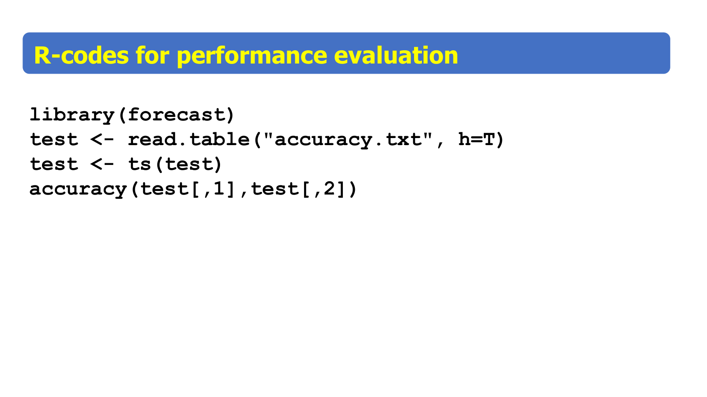
คำถามหลักของวิชาคืออนุกรมเวลานี้นิ่งหรือไม่25 ปัญหาตั้งต้นมาจาก Lesson 1 ซึ่งพบว่าแต่ละจุดเวลาเป็นตัวแปรสุ่มคนละตัว แต่ข้อมูลจริงมีค่าเดียวต่อเวลา ถ้าแต่ละเวลามีค่าเฉลี่ยและความแปรปรวนต่างกันหมด เราจะประมาณค่าเหล่านั้นจากข้อมูลค่าเดียวไม่ได้ ทางออกคือหาอนุกรมที่กติกาไม่เปลี่ยนตามเวลา ข้อมูลทุกจุดจะได้ช่วยกันประมาณค่าชุดเดียวกัน อนุกรมแบบนั้นเรียกว่า stationary นิ่งในที่นี้หมายถึง distribution ไม่เปลี่ยนตามเวลา และอนุกรมที่ไม่นิ่งมีสามแบบ26 แบบแรกคือมี trend ตัดสองช่วงเวลามาเทียบแล้วค่าเฉลี่ยไม่เท่ากัน ต่อให้เป็นการแจกแจงปกติเหมือนกัน แต่ mean ต่างกันก็ถือว่าคนละ distribution27 แบบที่สองคือมี seasonal ซึ่งค่าเฉลี่ยของหน้าร้อนกับหน้าหนาวต่างกัน แบบที่สามคือแกว่งไม่เท่ากัน ความแปรปรวนซึ่งในอนุกรมเวลาเรียกว่า volatility ต่างกันตามช่วงเวลา และมีโมเดลเฉพาะคือ ARCH/GARCH ในบทท้าย กลยุทธ์ของทั้งวิชาจึงสรุปได้ในประโยคเดียว อนุกรมส่วนใหญ่ไม่ stationary เราจึงดึงส่วนที่ไม่นิ่งออกก่อน เอาส่วนที่นิ่งไปสร้างโมเดล แล้วค่อยปรับกลับทีหลัง28 Lesson 3 ดึง trend ออกด้วย detrending และ differencing ส่วน Lesson 7 ดึงความแปรปรวนที่ไม่คงที่ออกด้วย log
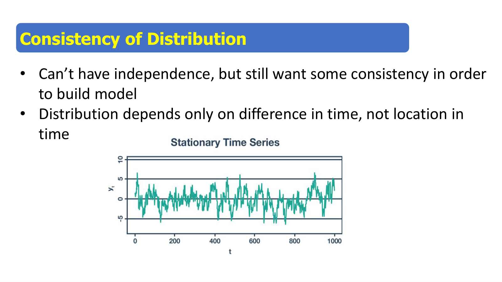
เมื่อค่าที่อยู่ติดกันสัมพันธ์กัน จึงไม่มีความเป็นอิสระ แล้วอะไรที่ยังคงที่ให้ยึดได้ คำตอบคือการแจกแจงต้องขึ้นกับระยะห่างของเวลาเท่านั้น ไม่ขึ้นกับตำแหน่งของเวลา ความสัมพันธ์ระหว่างสองค่าที่ห่างกัน 3 ช่วงต้องเหมือนกันไม่ว่าจะอยู่ต้นหรือปลายข้อมูล กราฟ 1,000 จุดนี้แกว่งรอบ 0 ระหว่าง −5 ถึง 5 ตลอด ถ้าตัดช่วง 0–200 มาเทียบกับ 800–1,000 ระดับกลางและความกว้างเท่ากัน ข้อสังเกตสำคัญคือสิ่งที่ต้องคงที่คือโอกาส ไม่ใช่ขอบเขตของค่า ค่าอาจหลุดไปถึง 6 สักครั้งก็ยังนิ่งอยู่ ตราบใดที่โอกาสหลุดแบบนั้นเท่ากันทุกช่วงเวลา ในทางกลับกัน อนุกรมที่ไม่เคยหลุดจาก −5 ถึง 5 ก็อาจไม่นิ่งได้ เช่น คลื่นที่หน้าร้อนแกว่งรอบ +4 และหน้าหนาวแกว่งรอบ −4 ซึ่งค่าเฉลี่ยขึ้นกับเดือน นิยามแบบกว้างจึงมีสามข้อซึ่งตรงกับอนุกรมไม่นิ่งสามแบบข้างบน คือไม่มีการเปลี่ยนแปลงอย่างเป็นระบบของค่าเฉลี่ย ไม่มีการเปลี่ยนแปลงอย่างเป็นระบบของความแปรปรวน และไม่มีรูปแบบที่ซ้ำเป็นคาบ เปรียบได้กับเกมทอยลูกเต๋าที่กติกาไม่เปลี่ยน ผลแต่ละตายังสุ่ม แต่ลูกเต๋าเป็นลูกเดิมตลอด สถิติของ 100 ตาแรกจึงคล้ายของ 100 ตาสุดท้าย
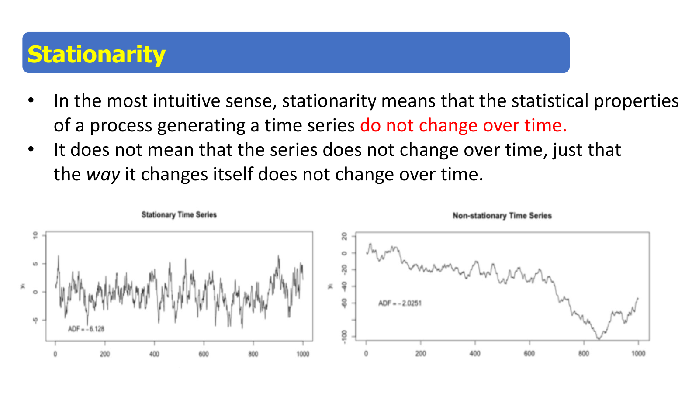
สไลด์สรุปว่า stationarity หมายถึงสมบัติทางสถิติของ process do not change over time. ซึ่งไม่ได้แปลว่าข้อมูลไม่เปลี่ยน แต่แปลว่าวิธีที่มันเปลี่ยนนั้นไม่เปลี่ยน กราฟแรกแกว่งรอบ 0 ระหว่าง −5 ถึง 5 ตลอดช่วง ค่าเปลี่ยนตลอดเวลาแต่ลักษณะการเปลี่ยนเหมือนเดิม จึงนิ่ง และมีค่า ADF เท่ากับ −6.128 กราฟที่สองลดจาก 0 ลงไปราว −100 ที่เวลาประมาณ 850 แล้วกลับขึ้นมาราว −55 ระดับเฉลี่ยเปลี่ยนตามช่วงเวลา จึงไม่นิ่ง และมีค่า ADF เพียง −2.0251 ADF คือการทดสอบ Augmented Dickey-Fuller ซึ่งค่าที่ติดลบมากสนับสนุนว่านิ่ง สอนใน Lesson 3 การตรวจความนิ่งจากกราฟด้วยตาทำได้โดยแบ่งกราฟเป็น 3–4 ช่วงเท่ากัน แล้วเทียบระดับกลางของแต่ละช่วงเพื่อดูค่าเฉลี่ย เทียบความกว้างของการแกว่งเพื่อดูความแปรปรวน และมองหารอบที่ซ้ำตามปฏิทินเพื่อดู seasonal
ทำไม stationarity จึงสำคัญ สไลด์ให้เหตุผลสามข้อ ข้อแรก อนุกรมที่นิ่งเป็นกลุ่มย่อยของโมเดลทั้งหมด และกลุ่มนี้ much easier to model and investigate. ข้อสอง อนุกรมที่นิ่งพยากรณ์ได้ as the way they change is predictable. มันอาจดู "ไม่น่าสนใจ" เพราะไม่มีอะไรตื่นเต้น แต่สร้างโมเดลง่ายเพราะ "predictable"29 ข้อสาม ทฤษฎีส่วนใหญ่สร้างบนอนุกรมที่นิ่ง จึงมักต้อง transform a nonstationary time series into a stationary ก่อนใช้ทฤษฎี ส่วนเหตุผลเชิงปฏิบัติก็คือเรื่องเดิม เมื่อกติกาไม่เปลี่ยน ข้อมูลทุกจุดช่วยกันประมาณค่าเฉลี่ยและ covariance ชุดเดียวกันได้
Stationarity มีสองแบบ คือแบบเข้ม (strong หรือ strict) ซึ่งกำหนดเงื่อนไขกับการแจกแจงทั้งหมด และแบบอ่อน (weak) ซึ่งกำหนดเฉพาะค่าเฉลี่ยกับ covariance ให้นึกว่าทุกวันเราจับฉลากจากกล่องหนึ่งใบ เลขบนฉลากคือค่า \(X_t\) ของวันนั้น แบบเข้มต้องการให้ทุกวันใช้กล่องที่เหมือนกันทุกอย่าง มีเลขอะไรกี่ใบต้องเหมือนเดิมเป๊ะ และถ้าจับสองวันที่ห่างกัน 3 วัน ความเกี่ยวกันของสองใบนั้นก็ต้องเหมือนกันทุกช่วงของปี ในภาษาคณิตศาสตร์ \(\{X_t\}\) เป็น strictly stationary ถ้าการแจกแจงร่วมของ \((X_{t_1},\dots,X_{t_n})\) เหมือนกับของ \((X_{t_1+h},\dots,X_{t_n+h})\) สำหรับทุกชุดของเวลา ทุก h และทุก n คือหยิบจุดเวลากี่จุดก็ได้ แล้วเลื่อนทั้งชุดไป h ช่วง การแจกแจงร่วมต้องเหมือนเดิม เช่น \((X_1,X_3)\), \((X_{11},X_{13})\) และ \((X_{101},X_{103})\) ต้องมีการแจกแจงร่วมเดียวกัน เมื่อ n = 1 นิยามนี้ทำให้ทุกจุดเวลามีการแจกแจงเดียวกัน \(E(X_t)\) และ \(\mathrm{Var}(X_t)\) จึงคงที่ เมื่อ n = 2 การแจกแจงร่วมของ \((X_t,X_s)\) เหมือนของ \((X_{t+h},X_{s+h})\) ถ้าเลือก h = −s จะเหมือนของ \((X_{t-s},X_0)\) ซึ่งขึ้นกับ t และ s ผ่านค่า t − s เท่านั้น covariance จึงขึ้นกับระยะห่างอย่างเดียว
เมื่อ process นิ่ง covariance \(\gamma(s,t)\) ขึ้นกับระยะห่าง \(|t-s|\) เท่านั้น สัญกรณ์สองตัวห้อยจึงย่อเหลือตัวเดียว เพราะรู้ระยะห่างก็รู้ค่า ไม่ต้องรู้ว่าอยู่ที่เวลาใด เราเขียน \(\gamma(h)=\mathrm{cov}(X_t,X_{t-h})\) และ \(\rho(h)=\mathrm{corr}(X_t,X_{t-h})\) โดย \(\gamma(0)=\mathrm{Var}(X_t)\) และ ACF ย่อเป็น \(\rho(h)=\gamma(h)/\gamma(0)\) เพราะตัวหารเดิม \(\sqrt{\gamma(s,s)\gamma(t,t)}\) กลายเป็น \(\sqrt{\gamma(0)\gamma(0)}=\gamma(0)\) เมื่อความแปรปรวนเท่ากันทุกเวลา ปัญหาของแบบเข้มคือพิสูจน์ยาก30 เพราะต้องรู้การแจกแจงร่วมของทุกชุดของเวลา ขณะที่มีข้อมูลเส้นเดียว จึงหันมาใช้แบบอ่อนที่สนใจแค่ moment สองอันดับแรก ตามเหตุผลเดียวกับ Lesson 1 ที่ระบุโมเดลด้วยค่าเฉลี่ย ความแปรปรวน และ covariance
แบบอ่อนไม่ต้องดูว่าในกล่องมีฉลากอะไรบ้าง ดูแค่ตัวเลขสรุปของกล่องว่าเท่ากันทุกวันหรือไม่ \(\{X_t\}\) เป็น weakly stationary หรือ second-order stationary ถ้าค่าเฉลี่ย \(E(X_t)\) เท่ากันทุก t ความแปรปรวนเท่ากันทุก t และ covariance ระหว่าง \(X_t\) กับ \(X_{t-h}\) เท่ากันทุก t ที่แต่ละ lag h เงื่อนไขทั้งสามคือผลของแบบเข้มที่เพิ่งเห็น แบบอ่อนจึงเก็บเฉพาะผลที่ต้องใช้และทิ้งเงื่อนไขเรื่องการแจกแจงทั้งหมด วิธีตรวจที่ให้จดตรงตามสไลด์มีสองข้อ31 ข้อหนึ่ง mean function คงที่ (i.e. 𝝁𝒕 is free of t) ข้อสอง autocovariance ขึ้นกับ lag อย่างเดียว (i.e. 𝜸𝒕,𝒕+𝒉 depends only on 𝒉 ,not on 𝒕) เงื่อนไขความแปรปรวนคงที่รวมอยู่ในข้อสองแล้ว เพราะ \(\gamma(t,t)\) เมื่อ h = 0 คือความแปรปรวน ซึ่งต้องไม่ขึ้นกับ t
ความสัมพันธ์ของสองแบบเป็นทางเดียว ถ้ากล่องเหมือนกันทุกอย่าง ค่าเฉลี่ยกับความกระจายก็ต้องเท่ากันด้วย strong จึงให้ weak เสมอ แต่ถ้ารู้แค่ว่าค่าเฉลี่ยกับความกระจายเท่ากัน กล่องอาจหน้าตาต่างกันได้ ลองนึกถึงกล่อง A ที่มีฉลาก −1 และ +1 อย่างละใบ กับกล่อง B ที่มีฉลาก −2 หนึ่งใบ 0 หกใบ และ +2 หนึ่งใบ ทั้งสองกล่องมีค่าเฉลี่ย 0 และความแปรปรวน 1 เท่ากัน ถ้าวันคี่จับจากกล่อง A และวันคู่จับจากกล่อง B อย่างอิสระ อนุกรมนี้ผ่านแบบอ่อน แต่ไม่ผ่านแบบเข้ม เพราะวันคู่มีโอกาสได้ +2 แต่วันคี่ไม่มีทางได้ Exercise 1 ข้อ 1 ในตอนที่ 4 เป็นตัวอย่างแบบเดียวกันนี้ เพื่อความง่ายของวิชา ถ้า weakly stationary ก็ถือว่า stationary32 คำว่า stationary ในบทต่อ ๆ ไปจึงหมายถึงแบบอ่อน และการตรวจกราฟด้วยตาที่เทียบระดับกลางกับความกว้างของการแกว่งก็คือการตรวจแบบอ่อนนั่นเอง
ถ้ามี t อยู่ในผล สรุปว่าไม่นิ่งได้ทันที ถ้าเป็นค่าคงที่ ซึ่งไม่จำเป็นต้องเป็น 0 ไปขั้นต่อไป
นับ w ที่ตรงกันตามวิธีใน Lesson 1 เริ่มจาก h = 0, 1, 2 ไปจนถึงระยะห่างที่ไกลที่สุดในสมการ อย่าหยุดเร็ว
ถ้า \(\gamma\) ขึ้นกับ h เท่านั้น สรุปว่านิ่ง ถ้ามี t ปนอยู่ สรุปว่าไม่นิ่ง เทคนิคที่ช่วยได้คือแทน t ด้วยสองค่า เช่น 1 กับ 10 ถ้าผลต่างกัน แปลว่าขึ้นกับเวลา
หาร \(\gamma(h)\) ทุกตัวด้วย \(\gamma(0)\)
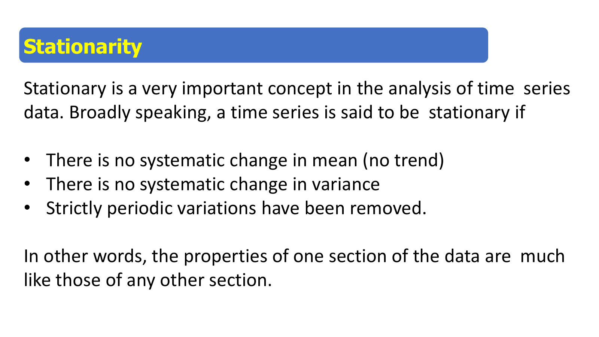


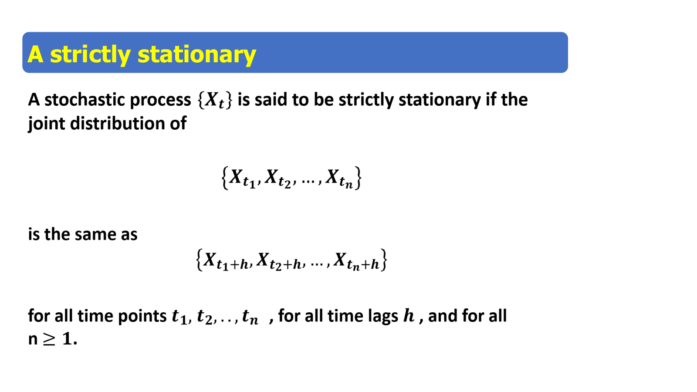
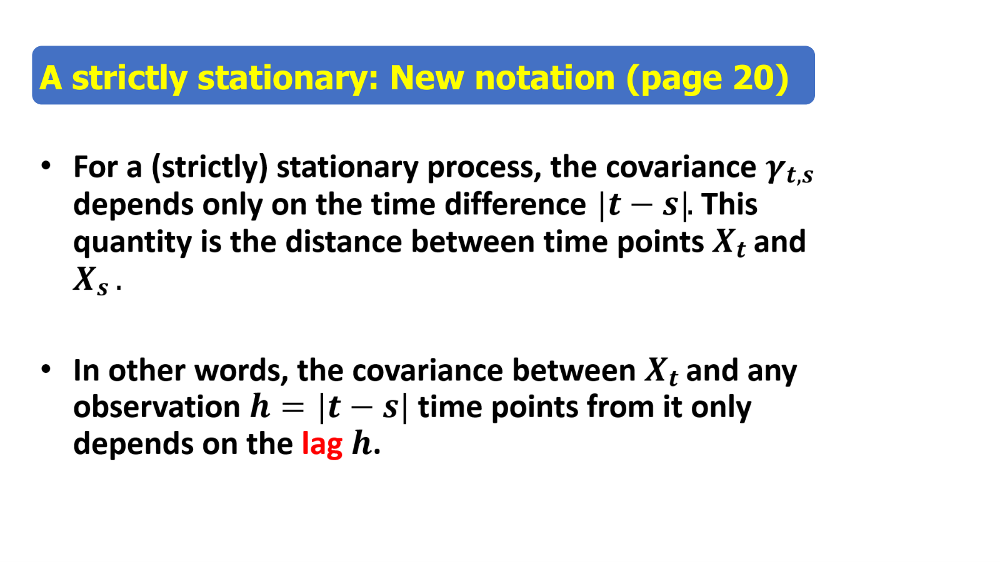


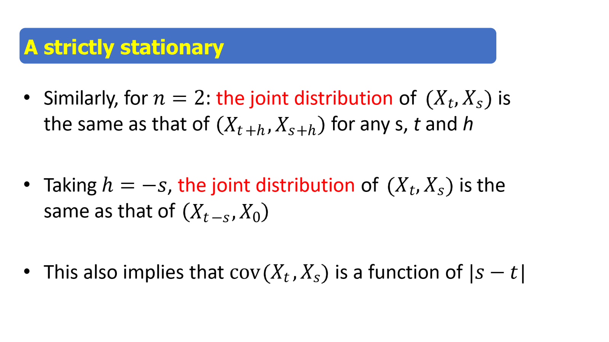


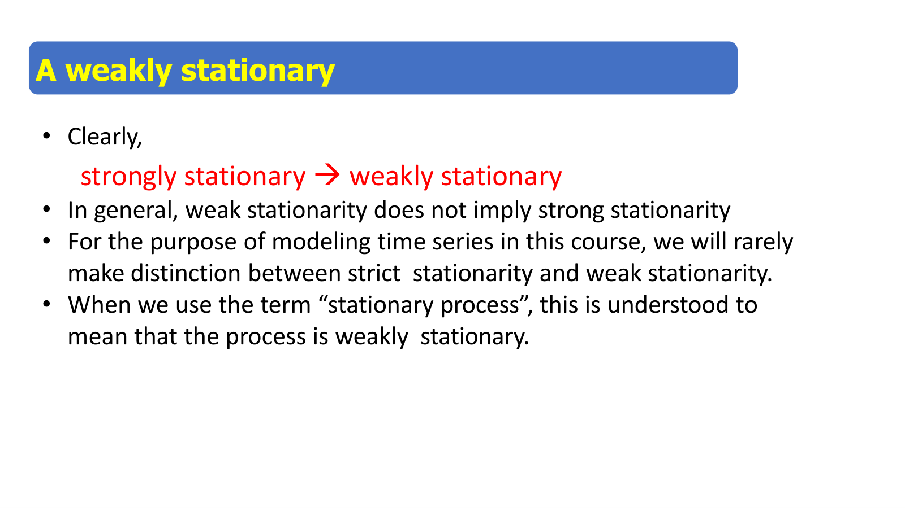
ทำไมต้องฝึกกับโมเดลที่รู้สมการ ในชีวิตจริงเราไม่รู้ว่าข้อมูลมาจากโมเดลใด แต่ถ้าศึกษาแบบแผนของแต่ละโมเดลไว้ก่อน เมื่อข้อมูลจริงมีลักษณะคล้ายโมเดลใด ก็ใช้โมเดลนั้น33 เหมือนเรียนลักษณะของโรคจากตำราก่อนไปวินิจฉัยคนไข้จริง สไลด์หน้า 33 ให้สามโมเดลโดยไม่แสดงวิธีทำ คือ white noise ค่าเฉลี่ยถ่วงน้ำหนักสามจุด และ random walk ทั้งสามมีค่าเฉลี่ยเป็น 0 เหมือนกัน แต่ผลต่างกันชัด สองตัวแรกนิ่ง ส่วนตัวสุดท้ายไม่นิ่ง white noise \(w_t\sim iid\ N(0,\sigma^2)\) เป็นข้อที่ง่ายที่สุด ค่าเฉลี่ย \(E(w_t)=0\) ไม่ขึ้นกับ t และ \(\gamma(0)=\sigma^2\) กับ \(\gamma(h)=0\) เมื่อ h ≠ 0 ขึ้นกับ h เท่านั้น จึง stationary34
\(E(x_t)=0+2(0)+0=0\)
\(\sigma^2+4\sigma^2+\sigma^2=6\sigma^2\) โดยดึงสัมประสิทธิ์ 2 กับ 2 ออกมาเป็น \(4\sigma^2\)35
\(x_{t+1}=w_t+2w_{t+1}+w_{t+2}\) ตัวที่ตรงกันคือ \(w_t\) (2 กับ 1) และ \(w_{t+1}\) (1 กับ 2): \(2\sigma^2+2\sigma^2=4\sigma^2\)
\(x_{t+2}=w_{t+1}+2w_{t+2}+w_{t+3}\) ตัวที่ตรงกันมีแค่ \(w_{t+1}\) (1 กับ 1): \(\gamma(2)=\sigma^2\) ไม่ใช่ \(2\sigma^2\)
ไม่มีตัวที่ตรงกันจึงเป็น 0 ได้ \(\rho(1)=4/6=2/3\), \(\rho(2)=1/6\), \(\rho(h)=0\) เมื่อ \(|h|\ge3\)
ขั้น \(\gamma(2)\) คือกับดักที่เกิดในห้องเรียนจริง เมื่อเห็น 6 แล้ว 4 คนมักเดาว่าตัวต่อไปเป็น 2 แต่ค่าจริงคือ \(\sigma^2\) ต้องคูณกระจายจริงเสมอ36 อย่าเชื่อเพียงเพราะฟังดูมีเหตุผล37 วิธีกันพลาดคือเขียนสัมประสิทธิ์ของสองก้อนเรียงเป็นตาราง \(x_t\) มีสัมประสิทธิ์ 1, 2, 1 ที่ \(w_{t-1},w_t,w_{t+1}\) ส่วน \(x_{t+2}\) มี 1, 2, 1 ที่ \(w_{t+1},w_{t+2},w_{t+3}\) ช่องที่ตรงกันมีแค่ \(w_{t+1}\) ซึ่งให้ \(1\cdot1=1\) โมเดลที่สามคือ random walk \(x_t=w_1+w_2+\dots+w_t\) ซึ่งเป็นการบ้านของคาบ ค่าเฉลี่ย \(E(x_t)=0\) ไม่ขึ้นกับ t จึงผ่านข้อแรก แต่ w ทั้ง t ตัวอิสระต่อกัน \(\mathrm{Var}(x_t)=t\sigma^2\) และ \(x_t\) กับ \(x_{t+h}\) มี w ร่วมกัน t ตัว จึงได้ \(\gamma(t,t+h)=t\sigma^2\) ซึ่งมี t อยู่ในผล random walk จึงไม่ stationary ทั้งที่ค่าเฉลี่ยคงที่38 ตัวอย่างนี้แสดงว่าต้องตรวจครบสองข้อเสมอ random walk ไม่มี trend ที่แน่นอน แต่ยิ่งเวลาผ่านไป ค่ายิ่งเดินออกห่างจากจุดเริ่มได้ไกลขึ้น เหมือนคนเมาที่ไม่ได้ตั้งใจเดินไปทางไหน แต่ยิ่งเดินนาน ยิ่งมีโอกาสอยู่ห่างจากเสาไฟต้นแรก
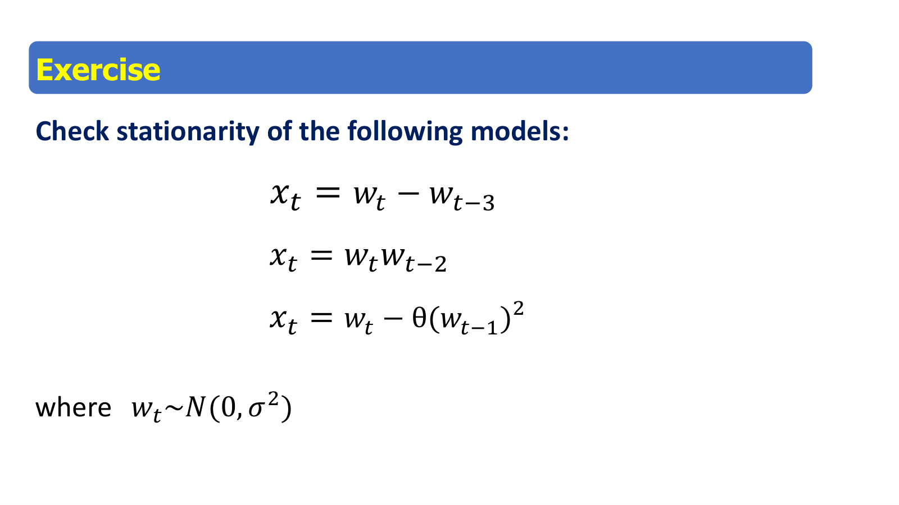
Exercise ท้ายสไลด์ให้ตรวจสามโมเดล โดย \(w_t\sim N(0,\sigma^2)\) ข้อ (a) \(x_t=w_t-w_{t-3}\) เป็นข้อสอบเก่า ข้อ (b) \(x_t=w_tw_{t-2}\) เป็นการบ้าน และข้อ (c) \(x_t=w_t-\theta(w_{t-1})^2\) เป็นข้อที่ยากที่สุดซึ่งมีเฉลยในห้อง ข้อ (a) ทดสอบความพยายามโดยตรง สมัยก่อนนักศึกษา 70% ทำถูก ส่วนอีก 30% เห็น lag 1 กับ lag 2 เป็น 0 แล้วอนุมานว่า lag 3 และ lag 4 ก็เป็น 0 ด้วย ซึ่งผิด39 กฎที่ต้องจำคือไล่ h ไปจนถึงระยะห่างที่ไกลที่สุดในสมการ ซึ่งในข้อนี้คือ 3 เพราะมี \(w_t\) กับ \(w_{t-3}\)
\(E(x_t)=0-0=0\) และ \(\gamma(0)=\sigma^2+(-1)^2\sigma^2=2\sigma^2\)
\(x_{t+1}=w_{t+1}-w_{t-2}\) และ \(x_{t+2}=w_{t+2}-w_{t-1}\) ไม่มีตัวที่ตรงกับ \(w_t,w_{t-3}\) จึงเป็น 0 ทั้งคู่
\(x_{t+3}=w_{t+3}-w_t\) ตัวที่ตรงกันคือ \(w_t\) ซึ่งมีสัมประสิทธิ์ +1 ใน \(x_t\) และ −1 ใน \(x_{t+3}\): \(\gamma(3)=\mathrm{cov}(w_t,-w_t)=-\sigma^2\)
ไม่มีตัวที่ตรงกัน: 0
ข้อ (b) และ (c) ต้องรู้ moment ของการแจกแจงปกติก่อน ถ้าไม่รู้ว่า moment คืออะไร ข้อนี้จะทำไม่ได้ตั้งแต่ต้น41 moment ลำดับที่ k คือ \(E(W^k)\) สำหรับ \(W\sim N(\mu,\sigma^2)\) มีสูตรดังนี้42 \(E(W)=\mu\), \(E(W^2)=\mu^2+\sigma^2\), \(E(W^3)=\mu^3+3\mu\sigma^2\) และ \(E(W^4)=\mu^4+6\mu^2\sigma^2+3\sigma^4\) เมื่อ μ = 0 จึงเหลือ 0, \(\sigma^2\), 0 และ \(3\sigma^4\) ตามลำดับ moment ลำดับคี่เป็น 0 เพราะการแจกแจงปกติสมมาตรรอบ 0 ค่าบวกกับค่าลบหักล้างกัน ผลที่ใช้บ่อยคือ \(\mathrm{Var}(W^2)=E(W^4)-[E(W^2)]^2=3\sigma^4-\sigma^4=2\sigma^4\) และถ้า X กับ Y อิสระต่อกัน \(E(XY)=E(X)E(Y)\)
\(E(x_t)=E(w_t)-\theta E(w_{t-1}^2)=0-\theta\sigma^2=-\theta\sigma^2\) ไม่ใช่ 043 แต่เป็นค่าคงที่ ไม่มี t จึงผ่านข้อแรก
\(w_t\) กับ \(w_{t-1}^2\) อยู่คนละเวลาจึงอิสระต่อกัน: \(\mathrm{Var}(w_t)+\theta^2\mathrm{Var}(w_{t-1}^2)=\sigma^2+\theta^2(3\sigma^4-\sigma^4)=\sigma^2+2\theta^2\sigma^4\)
\(x_{t+1}=w_{t+1}-\theta w_t^2\) คู่ที่มีตัวร่วมคือ \(w_t\) กับ \(-\theta w_t^2\): \(-\theta\,\mathrm{cov}(w_t,w_t^2)=-\theta[E(w_t^3)-E(w_t)E(w_t^2)]=-\theta[0-0]=0\)
ไม่มีตัวร่วม จึงเป็น 0 คนละจุดเวลาถือว่า covariance เป็นศูนย์ แม้อยู่ในฟังก์ชันที่ต่างกัน44
ข้อ (c) ยากด้วยสองเหตุผล เหตุผลแรก ค่าเฉลี่ยไม่จำเป็นต้องเป็น 0 แค่ต้องไม่ขึ้นกับ t เหตุผลที่สอง ขั้น \(\gamma(1)\) ต้องใช้ \(E(w^3)=0\) ซึ่งจริงเพราะ w แจกแจงปกติ ถ้าเปลี่ยนเป็นการแจกแจงที่ไม่สมมาตร ขั้นนี้จะไม่เป็น 0 ควิซครั้งแรกอาจออกแนวนี้ โดยคล้ายการบ้านและไม่ยากไปกว่านั้น45 ส่วนข้อ (b) \(x_t=w_tw_{t-2}\) ไม่ได้ทำในห้อง แต่ใช้วิธีเดียวกันได้ \(w_t\) กับ \(w_{t-2}\) อิสระต่อกัน ค่าเฉลี่ยจึงเป็น \(E(w_t)E(w_{t-2})=0\) และ \(\gamma(0)=E(x_t^2)=E(w_t^2)E(w_{t-2}^2)=\sigma^4\) ส่วน \(\gamma(h)\) เมื่อ h ≠ 0 คือ \(E(w_tw_{t-2}w_{t+h}w_{t+h-2})\) ถ้ามี w ตัวใดปรากฏครั้งเดียวในผลคูณ ค่าคาดหมายของตัวนั้นซึ่งเป็น 0 จะแยกออกมาคูณทำให้ทั้งหมดเป็น 0 เช่น h = 2 ได้ \(w_t^2w_{t-2}w_{t+2}\) ซึ่งมี \(w_{t-2}\) และ \(w_{t+2}\) ปรากฏครั้งเดียว ข้อ (b) จึง stationary และหน้าตาเหมือน white noise ทุกประการ ทั้งที่ \(x_t\) กับ \(x_{t+2}\) ใช้ \(w_t\) ร่วมกันจึงไม่เป็นอิสระต่อกัน นี่คืออีกตัวอย่างของ covariance เป็น 0 แต่ไม่อิสระ ตรงกับคำเตือนบนสไลด์ Lesson 1 หน้า 28
Exercise 1 ที่แจกในวิชามีแปดข้อ ข้อ 3 คือ \(w_{t-1}+2w_t+w_{t+1}\) ที่ทำไปแล้ว ข้อ 5–8 เรื่อง sample ACF, differencing และการใช้ R อยู่ใน Lesson 3 ส่วนข้อ 1, 2 และ 4 เป็นโจทย์ตรวจ stationarity ด้วยวิธีของบทนี้
\(E(X_t)=0\) และ \(\gamma(0)=(1^2+1.2^2+1.6^2)\sigma^2=(1+1.44+2.56)(0.25)=5(0.25)=1.25\)
\(X_{t+1}=w_{t+1}-1.2w_t-1.6w_{t-1}\) ตัวที่ตรงกัน: \(w_t\) (1 กับ −1.2) และ \(w_{t-1}\) (−1.2 กับ −1.6): \((-1.2+1.92)(0.25)=0.18\)
\(X_{t+2}=w_{t+2}-1.2w_{t+1}-1.6w_t\) ตัวที่ตรงกันคือ \(w_t\) (1 กับ −1.6): \(-1.6(0.25)=-0.4\) ส่วน \(|h|\ge3\) เป็น 0
\(\rho(1)=0.18/1.25=0.144\), \(\rho(2)=-0.4/1.25=-0.32\) ตรวจด้วย ARMAacf(ma = c(-1.2, -1.6), lag.max = 3) ได้ 1, 0.144, −0.320, 0
t คู่: \(E(Z_t)=0\) และ t คี่: \((E(Z_{t-1}^2)-1)/\sqrt2=(1-1)/\sqrt2=0\) เท่ากันทุก t
t คู่: 1 และ t คี่: \(\mathrm{Var}(Z^2)/2=(3-1)/2=1\) เท่ากันทุก t
คู่ที่ติดกัน (t คี่กับ t − 1 คู่) ใช้ \(Z_{t-1}\) ร่วมกัน: \(\mathrm{cov}(Z_{t-1},(Z_{t-1}^2-1)/\sqrt2)=E(Z^3)/\sqrt2=0\) คู่อื่นใช้ Z คนละตัวจึงเป็น 0
ข้อ 1 ตอบคำถามของสไลด์หน้า 32 ได้ตรงที่สุด ค่าเฉลี่ยและ covariance เหมือนกันทุกเวลา แต่หน้าตาการแจกแจงสลับไปมาระหว่างเวลาคู่กับคี่ เหมือนกล่อง A กับกล่อง B ในตอนที่ 3 เมื่อจำลอง 1,000 จุดใน R ได้ค่าเฉลี่ย 0.018 ความแปรปรวน 0.968 และ ACF ที่ lag 1 เท่ากับ 0.062 ซึ่งอยู่ในเส้นขอบ 0.063
\(E(X_t)=\cos(ct)E(w_0)=0\) ทุก t
\(\cos(ct)\) เป็นค่าคงที่ ส่วนที่สุ่มคือ \(w_0\) ตัวเดียว: \(\gamma(t,t+h)=\sigma^2\cos(ct)\cos(c(t+h))\)
ใช้ \(\cos A\cos B=\tfrac12[\cos(A-B)+\cos(A+B)]\): \(\gamma(t,t+h)=\tfrac{\sigma^2}2[\cos(ch)+\cos(c(2t+h))]\) พจน์หลังมี t เช่น \(\mathrm{Var}(X_t)=\sigma^2\cos^2(ct)\) เปลี่ยนตาม t
เมื่อรวมทุกโมเดลในบทนี้เข้าด้วยกัน จะเห็นว่าโมเดลที่นิ่งมี γ ขึ้นกับ h อย่างเดียวเสมอ ส่วนโมเดลที่ไม่นิ่งมี t โผล่มาที่ใดที่หนึ่ง
| โมเดล | Mean | \(\gamma(0)\) | \(\gamma(h)\) ที่ไม่เป็น 0 | Stationary |
|---|---|---|---|---|
| White noise | 0 | \(\sigma^2\) | ไม่มี | ใช่ |
| \(w_{t-1}+2w_t+w_{t+1}\) | 0 | \(6\sigma^2\) | \(\gamma(1)=4\sigma^2\), \(\gamma(2)=\sigma^2\) | ใช่ |
| Random walk | 0 | \(t\sigma^2\) | \(t\sigma^2\) | ไม่ |
| \(w_t-w_{t-3}\) | 0 | \(2\sigma^2\) | \(\gamma(3)=-\sigma^2\) | ใช่ |
| \(w_tw_{t-2}\) | 0 | \(\sigma^4\) | ไม่มี | ใช่ |
| \(w_t-\theta w_{t-1}^2\) | \(-\theta\sigma^2\) | \(\sigma^2+2\theta^2\sigma^4\) | ไม่มี | ใช่ |
| \(w_t-1.2w_{t-1}-1.6w_{t-2}\) | 0 | 1.25 | \(\gamma(1)=0.18\), \(\gamma(2)=-0.4\) | ใช่ |
| \(w_0\cos(ct)\) | 0 | \(\sigma^2\cos^2(ct)\) | ขึ้นกับ t | ไม่ |
ภาคทฤษฎีของช่วงต้นวิชามีราว 3 ส่วน และต่อจากนี้จะเป็น data analysis46 Lesson 3 จึงเปลี่ยนจากโมเดลที่รู้สมการ ไปเป็นการประมาณค่าเหล่านี้จากข้อมูลจริง ส่วน white noise ที่เป็นพื้นฐานของทุกข้อในบทนี้ จะไม่ออกข้อสอบโดยตรงเพราะง่ายที่สุด47 แต่ทุกข้อสอบใช้สมบัติของมัน

หน้าแบบฝึกมีข้อสอบปลายภาคปีก่อน ๆ ที่ออกจากบทนี้พร้อมแม่แบบคำตอบ ลองฝึกต่อในแบบฝึก Lesson 2 หรืออ่านต่อ Lesson 3 — ประมาณ ACF จากข้อมูล, correlogram, ADF test, detrending และ differencing
ตัวเลขยกในเนื้อหาชี้มาที่รายการนี้ แต่ละรายการระบุคลาสและนาทีของคลิป พร้อมถ้อยคำในคลิปเมื่อมี
| หน้า | เนื้อหา | อยู่ในตอน |
|---|---|---|
| 1 | ปก Performance Evaluation | etc — ปก |
| 2–12 | ทำไมต้องประเมิน, cross-validation, overfitting, data partitioning, fixed, roll-forward, R-codes | ตอน 1 |
| 13–17 | Forecast errors, ตาราง Excel, R-codes | ตอน 2 |
| 18 | หน้าคั่น Stationary Time Series | etc — หน้าคั่น |
| 19–32 | Consistency, stationarity, why important, types, strictly stationary, new notation, weakly stationary | ตอน 3 |
| 33–34 | Check stationarity สามตัวอย่าง และ Exercise สามโมเดล | ตอน 4 |
แหล่งอื่นที่ใช้: Class 2 ช่วง 0:40–1:16 (performance evaluation และ R) และ 1:47–2:44 (stationarity และโจทย์), Class 4 ช่วง 0:15 และ 0:21 (ห้ามใช้ test set และควิซ RMSE/MAE), Exercise 1 ข้อ 1–4 (ตอน 4), ไฟล์ Forecast Error Example.xlsx, accuracy.txt, temp.txt และ R_codes ในโฟลเดอร์ CLASS 2